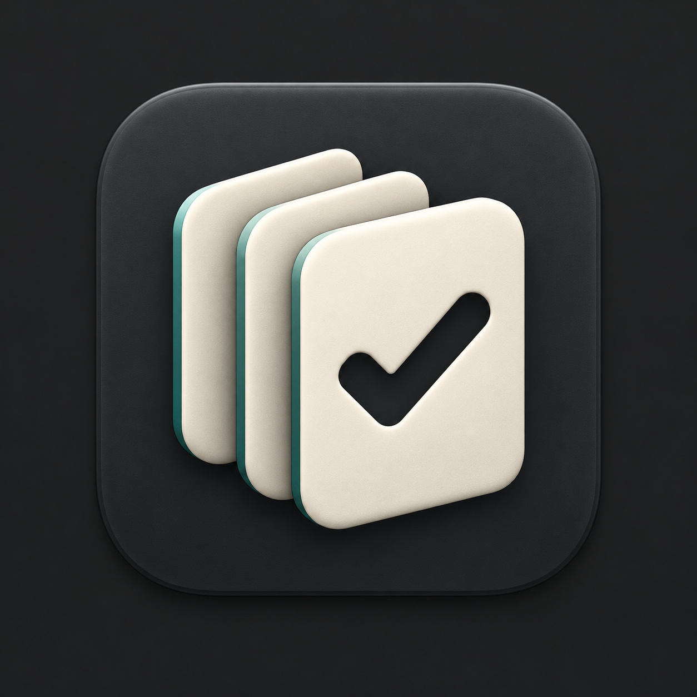

← Menu prototypeSkillsBar, at actual display sizes
One skill-card stack, adapted for an app tile and a monochrome menu-bar mark. Images below are not enlarged. Use 100% browser zoom.
App icon

32 × 32 pt48 × 48 pt · header64 × 64 ptMenu-bar template mark
Flat geometry removes texture and depth at small sizes. The check is transparent, so it follows the menu-bar background rather than introducing a second colour.
16 pt / 18 pt / 22 pt · dark menu bar
16 pt / 18 pt / 22 pt · light menu barCSS pixels map to logical points at 100% zoom; Retina displays use additional device pixels. Prototype assets only. No running app changes or native menu-bar installation.